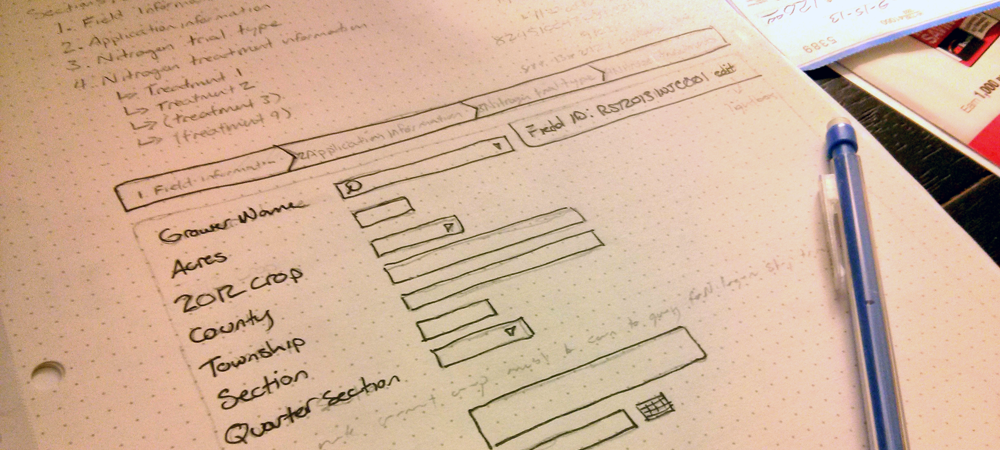

Report: Replicated Strip Trial Application
Persona
Tom Harvey is a 55-year-old corn and soybean farmer in Iowa. He loves his job, and would much rather be out in the fields than entering data on a computer. He cares greatly about the efficiency of his farm, and wants to easily know how his fields are performing.
Overview
This project came as a new form as part of an existing reporting application. In sum, farmers document various aspects of their fields throughout the season, including variety of seed, different fertilizers used, irrigation habits, etc. Replicated Strip Trials, from what I understand, include using various combinations of fertilizers, placing techniques and timing techniques, and compare the field’s output at season’s end to see which combination yielded the best results. Each combination is called a “field treatment”
Considerations

The new form to be added to the application came to me on paper - three pages long. This is a very complex form with plenty of required and conditional fields. Considering the primary demographic - an older generation that doesn’t want to get bogged down with confusion and complexity - the form needed to be greatly simplified.
Process
I started by identifying how the form could be split into related groups. I split the form into four steps, with breadcrumbs at the top to easily identify how far along you are in the process. Starting with personal information, which Tom will know best, and drilling down into more specific questions as he moves through the steps.
Cross-checking

Conditional field are hidden if it’s related field isn’t set, so Tom won’t even know it’s there. Less fields to complete equals a less overwhelming experience. To help with error handling, required fields are highlighted before Tom can continue to the next step. Before the final step is saved and submitted, there is another cross-check with the previous step to make sure the numbers all add up - this helps ensure accuracy and reduces errors from typos.
Comparing it all
Once Tom has entered and saved the data for each of his field treatments, he has the option to view a comparison report. The side-by-side report compares multiple aspects of each treatment, so Tom doesn’t have to do any of the thinking. One quick glance and he can get back out in the fields.